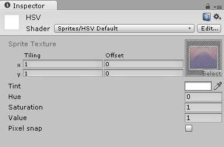
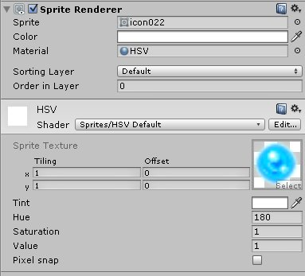

ShaderでSpriteの色相をシフトする
はじめに
前回、Sprite、Texture の 色相をシフトするで、SpriteからTexture2Dを取得して、SetPixelを使って色相をシフトすることをした。
今回はシェーダーを使って色相をシフトして、下図のように画像の色を変える。
用意
Unity のダウンロードから ビルトインシェーダーをダウンロードする。インストーラーじゃなくて、右端にあるビルトインシェーダ。この記事は現在最新の4.6.1をダウンロードして記述する。
解凍したら、DefaultResources にある Sprites-Default.shaderを元に作成する。これはSpriteを生成するとデフォルトで使われるシェーダーだ。
適当に名前を Sprites-HSV-Default.shader などにしてUnityのProjectに突っ込んで開始。
シェーダー名の変更
Shader “Sprites/Default” の箇所を Shader “Sprites/HSV Default” に変更。これで、MaterialのShaderのドロップダウンから Sprites -> HSV Default を選択できるようになる。
Propertiesの追加
まずはインスペクター上から設定できる項目を増やす。 色相(H)、彩度(S)、明度(V) の 3つを追加したいので、Propertiesを以下のように修正。
Properties
{
[PerRendererData] _MainTex ("Sprite Texture", 2D) = "white" {}
_Color ("Tint", Color) = (1,1,1,1)
_Hue ("Hue", Float) = 0 //色相
_Sat ("Saturation", Float) = 1 //彩度
_Val ("Value", Float) = 1 //明度
[MaterialToggle] PixelSnap ("Pixel snap", Float) = 0
}
このシェーダーをマテリアルに設定すると、下図のように Hue、Saturation、Value の値がインスペクターから設定できるようになる。

frag の修正
テクスチャーの各ピクセルの色に対して色相をシフトするので、fragの処理を修正する。
ここで、RGBからHSVに変換して計算するのだが、その処理は以下を参照した。
Problem with getting hue shift shader right.
追記、修正したコードは以下。
fixed3 shift_col(fixed3 RGB, half3 shift)
{
fixed3 RESULT = fixed3(RGB);
float VSU = shift.z*shift.y*cos(shift.x*3.14159265/180);
float VSW = shift.z*shift.y*sin(shift.x*3.14159265/180);
RESULT.x = (.299*shift.z+.701*VSU+.168*VSW)*RGB.x
+ (.587*shift.z-.587*VSU+.330*VSW)*RGB.y
+ (.114*shift.z-.114*VSU-.497*VSW)*RGB.z;
RESULT.y = (.299*shift.z-.299*VSU-.328*VSW)*RGB.x
+ (.587*shift.z+.413*VSU+.035*VSW)*RGB.y
+ (.114*shift.z-.114*VSU+.292*VSW)*RGB.z;
RESULT.z = (.299*shift.z-.3*VSU+1.25*VSW)*RGB.x
+ (.587*shift.z-.588*VSU-1.05*VSW)*RGB.y
+ (.114*shift.z+.886*VSU-.203*VSW)*RGB.z;
return (RESULT);
}
sampler2D _MainTex;
half _Hue, _Sat, _Val;
fixed4 frag(v2f IN) : SV_Target
{
fixed4 c = tex2D(_MainTex, IN.texcoord) * IN.color;
c.rgb *= c.a;
half3 shift = half3(_Hue, _Sat, _Val);
return fixed4( shift_col(c, shift), c.a);
}
Spriteに適用
あとは適当なマテリアルに作成したシェーダーをつけて、SpriteRendererに設定すれば良い（下図）。

スクリプトから色相をシフトして、アニメーションする処理はこうなる。
void Update () {
angle += 60f * Time.deltaTime;
renderer.material.SetFloat("_Hue", angle);
}
シェーダーの全ソース
Shader "Sprites/HSV Default"
{
Properties
{
[PerRendererData] _MainTex ("Sprite Texture", 2D) = "white" {}
_Color ("Tint", Color) = (1,1,1,1)
_Hue ("Hue", Float) = 0
_Sat ("Saturation", Float) = 1
_Val ("Value", Float) = 1
[MaterialToggle] PixelSnap ("Pixel snap", Float) = 0
}
SubShader
{
Tags
{
"Queue"="Transparent"
"IgnoreProjector"="True"
"RenderType"="Transparent"
"PreviewType"="Plane"
"CanUseSpriteAtlas"="True"
}
Cull Off
Lighting Off
ZWrite Off
Fog { Mode Off }
Blend One OneMinusSrcAlpha
Pass
{
CGPROGRAM
#pragma vertex vert
#pragma fragment frag
#pragma multi_compile DUMMY PIXELSNAP_ON
#include "UnityCG.cginc"
struct appdata_t
{
float4 vertex : POSITION;
float4 color : COLOR;
float2 texcoord : TEXCOORD0;
};
struct v2f
{
float4 vertex : SV_POSITION;
fixed4 color : COLOR;
half2 texcoord : TEXCOORD0;
};
fixed4 _Color;
v2f vert(appdata_t IN)
{
v2f OUT;
OUT.vertex = mul(UNITY_MATRIX_MVP, IN.vertex);
OUT.texcoord = IN.texcoord;
OUT.color = IN.color * _Color;
#ifdef PIXELSNAP_ON
OUT.vertex = UnityPixelSnap (OUT.vertex);
#endif
return OUT;
}
fixed3 shift_col(fixed3 RGB, half3 shift)
{
fixed3 RESULT = fixed3(RGB);
float VSU = shift.z*shift.y*cos(shift.x*3.14159265/180);
float VSW = shift.z*shift.y*sin(shift.x*3.14159265/180);
RESULT.x = (.299*shift.z+.701*VSU+.168*VSW)*RGB.x
+ (.587*shift.z-.587*VSU+.330*VSW)*RGB.y
+ (.114*shift.z-.114*VSU-.497*VSW)*RGB.z;
RESULT.y = (.299*shift.z-.299*VSU-.328*VSW)*RGB.x
+ (.587*shift.z+.413*VSU+.035*VSW)*RGB.y
+ (.114*shift.z-.114*VSU+.292*VSW)*RGB.z;
RESULT.z = (.299*shift.z-.3*VSU+1.25*VSW)*RGB.x
+ (.587*shift.z-.588*VSU-1.05*VSW)*RGB.y
+ (.114*shift.z+.886*VSU-.203*VSW)*RGB.z;
return (RESULT);
}
sampler2D _MainTex;
half _Hue, _Sat, _Val;
fixed4 frag(v2f IN) : SV_Target
{
fixed4 c = tex2D(_MainTex, IN.texcoord) * IN.color;
c.rgb *= c.a;
half3 shift = half3(_Hue, _Sat, _Val);
return fixed4( shift_col(c, shift), c.a);
}
ENDCG
}
}
}
確認バージョン
Unity 4.6